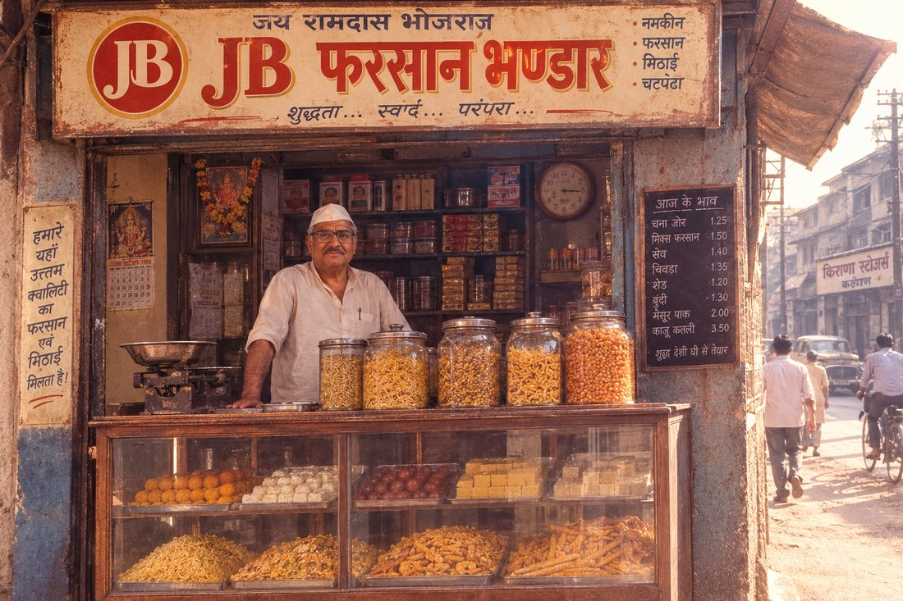
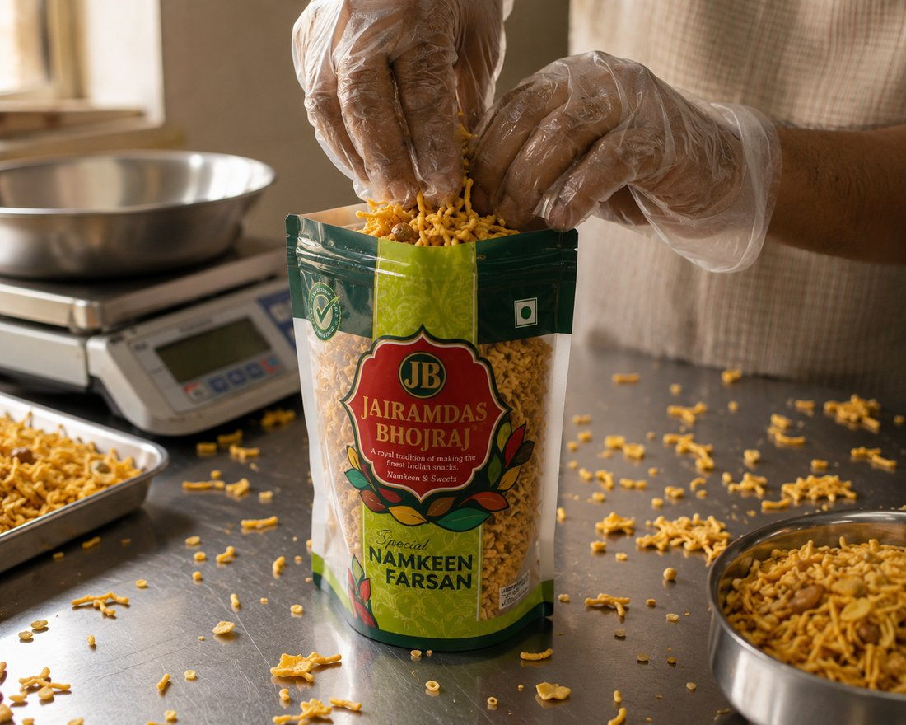
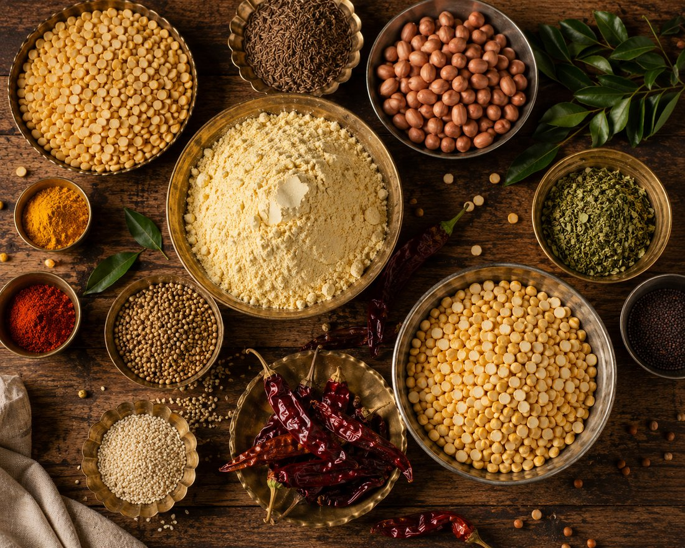
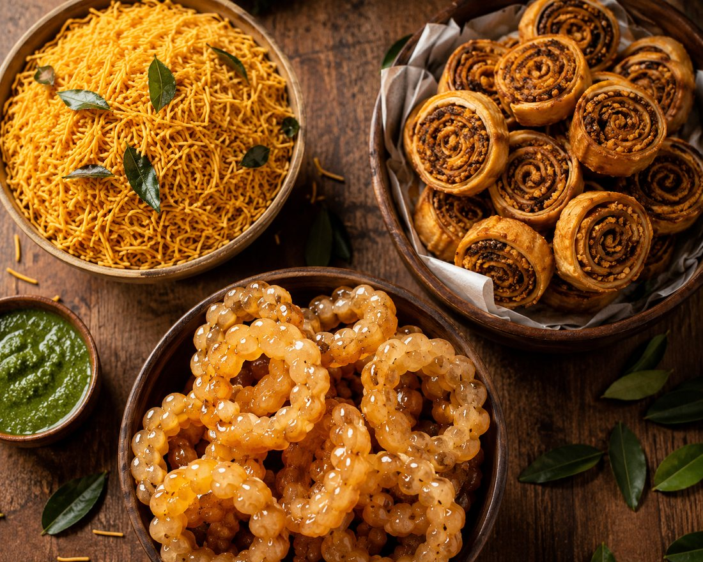
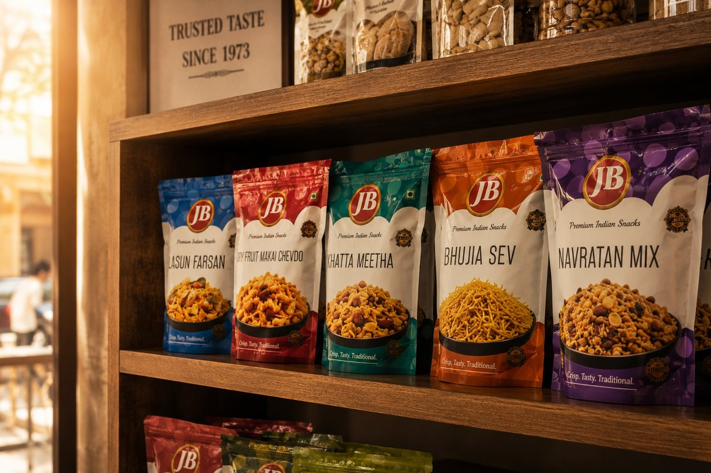

Established in 1972, JB Farsan and Sweet began as a small family-run operation in the Ulhasnagar district of Maharashtra. In those early years, the shop served one community above all — the Sindhi families who had rebuilt their lives in Ulhasnagar, and who wanted a taste of home in every batch of namkeen and mithai.
There was no large factory, no big machinery — just a family, a handful of recipes, and a promise to never cut corners on what went into the jar.
Over the decades, JB Farsan and Sweet grew from that modest local shop into a large, ISO-certified operation — without losing the family recipes it started with. What began on one street in Ulhasnagar is today ordered across Thane, Kalyan, and beyond.
The brand is now known well beyond the Sindhi community that first welcomed it — recognised for its authentic Sev, Bhakarwadi, and premium Gheeyar, alongside everyday favourites like Kolhapuri Mix, Chewda, and Papdi.

At JB Farsan, only the finest ingredients make it into the mix — fresh, authentic, and carefully selected. Our ingredients are lab-tested and FSSAI certified, kept free from harmful chemicals, so every batch reflects our decades of experience since 1972.

Sev, karanji-style rolls, and our glossy Gheeyar — these are the products people specifically walk in asking for, made fresh the same way they were in 1972.

To carry the same taste of home that started this shop in 1972 to every household that orders from us — in Ulhasnagar, and far beyond it.
To keep making every Sev, Bhakarwadi, and Gheeyar the way this family always has — 100% vegetarian, no shortcuts, and ISO-certified quality in every batch.

Every product on our shelf today still carries that same 1972 promise.